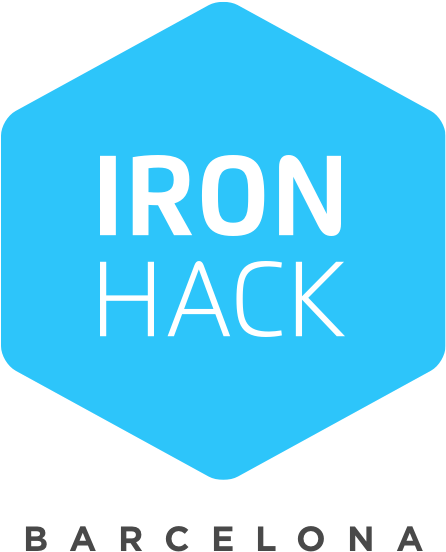

RAP INTERNACIONAL
Explora el talento de artistas como C. Tangana, Kase.O y Foyone, referentes actuales del rap en castellano.

Bienvenido a MiMusica, el espacio dedicado al rap español y catalán. Aquí encontrarás artistas, canciones y playlists para cada momento del día.
Descubre letras poderosas, ritmos oscuros y una selección moderna pensada para los amantes del rap urbano en español.
Proyecto creado con por HASSAN ADRAOU
Explora el talento de artistas como C. Tangana, Kase.O y Foyone, referentes actuales del rap en castellano.
Conecta con la energía de artistas catalanes como Natos y Waor y Santa Salut, con un estilo propio e innovador.